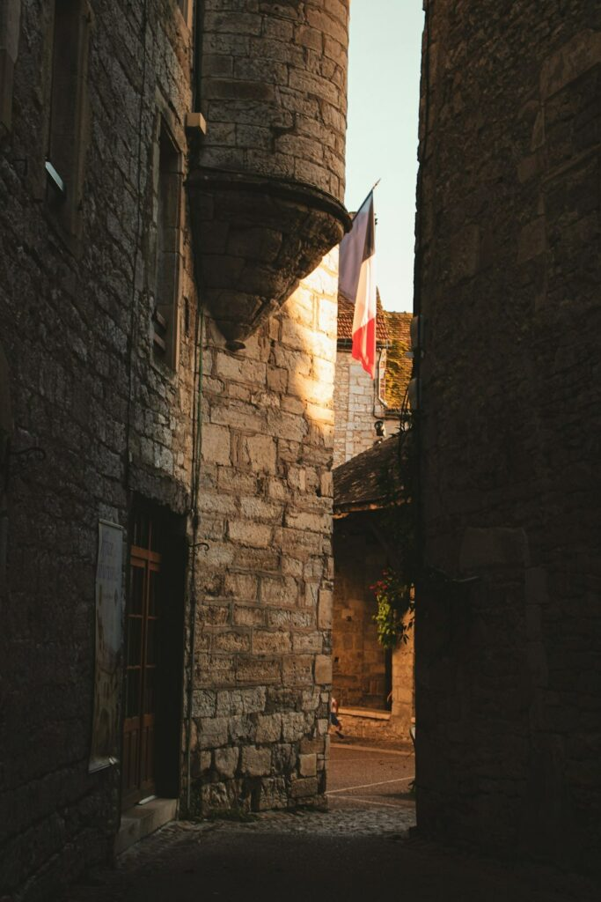
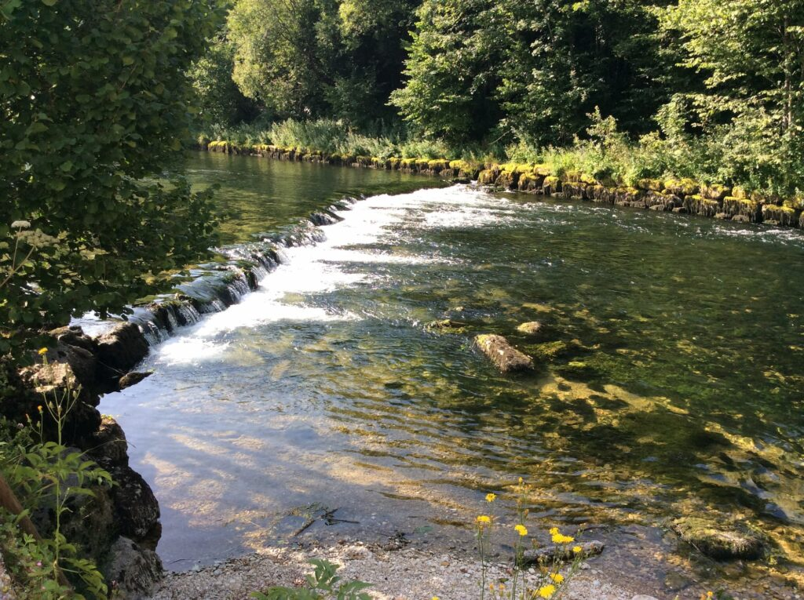
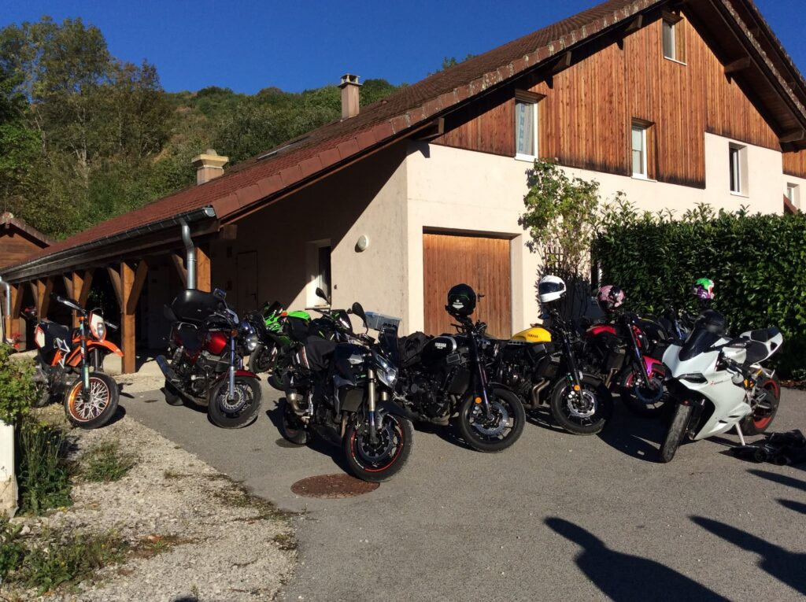
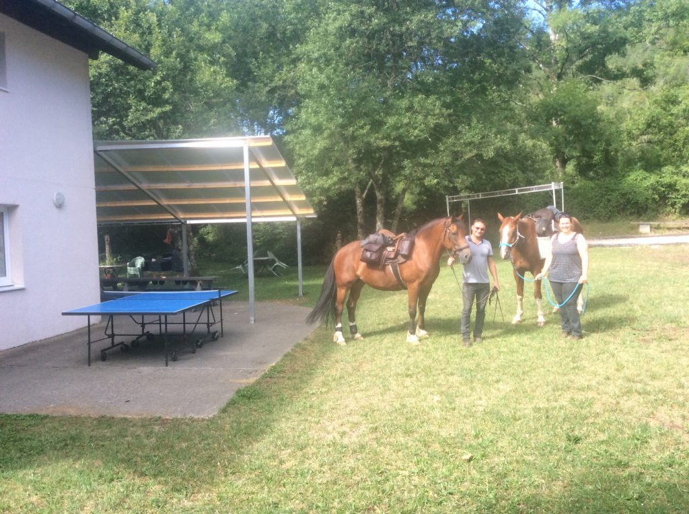

Activités
La vallée de la Loue : une vallée riche en activités pleine nature
Découverte de la vallée de la Loue
La vallée de la Loue, une « ambiance nature » avec d'anciens villages vignerons qui ont gardé toute leur authenticité et leur charme. Des villages situés sur le bord de la rivière aux maisons de pierres, accolées les unes aux autres, entre lesquelles serpentent des ruelles étroites. Tout autour une nature très forte qui reprend le dessus sur les anciennes parcelles de vignes.
C'est un lieu idéal pour le dépaysement et la tranquillité. Pour les personnes désirant flâner au rythme de leurs envies en combinant visites de sites et de musées, la vallée vous régalera avec sa gastronomie, ses sources et belvédères et les nombreux musées liés au patrimoine.
La vallée de la Loue séduit sportifs et amoureux de la nature.




Pêche sur la Loue
Un haut lieu préservé et riche en truites et ombres de belles tailles. La Loue est réputée pour la pêche à la mouche dans un cadre naturel exceptionnel.
Découvrez la société de pêche de Vuillafans et le blog de Nicolas Germain pour plus d'informations sur les parcours et les techniques de pêche locales.
Ballades moto
Motards, de belles ballades en étoile autour du gîte dans ces magnifiques vallées. La Tuffière est labellisée « Motard bienvenue » et vous propose un accueil adapté avec garage fermé.
Sports de pleine nature
Spéléologie, randonnées, VTT, canoë-kayak, via ferrata, escalade avec de nombreuses voies …
Liens utiles — Sports nature
Randonnées équestres
Randonnées à cheval, location d'ânes et mules de bât, balades à poney. Une manière originale de découvrir la vallée de la Loue et ses paysages préservés.
Les musées
Musée Courbet
Visiter le siteMusée du Costume et des Traditions
Visiter le siteMusée de la Vigne et du Vin
Visiter le siteVotre gîte dans le Doubs
Rendez-vous dans votre gîte La Tuffière pour découvrir les différentes activités possibles dans la vallée de la Loue. Située au cœur de la région Franche-Comté, vous y retrouverez assurément tout ce qu'il vous faut pour passer de bons moments.
Découvrez les activités de Loue-Lison sur le site de l'office du tourisme.
Nous contacter